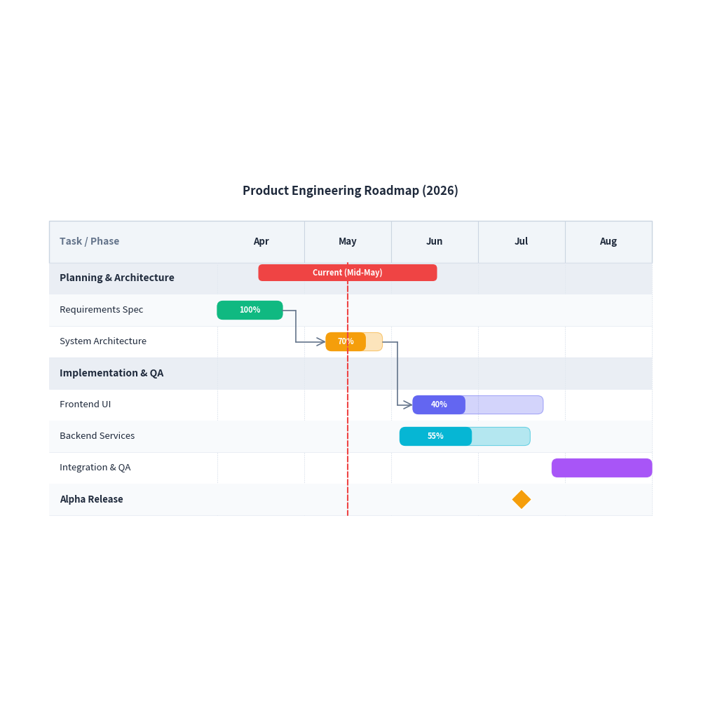
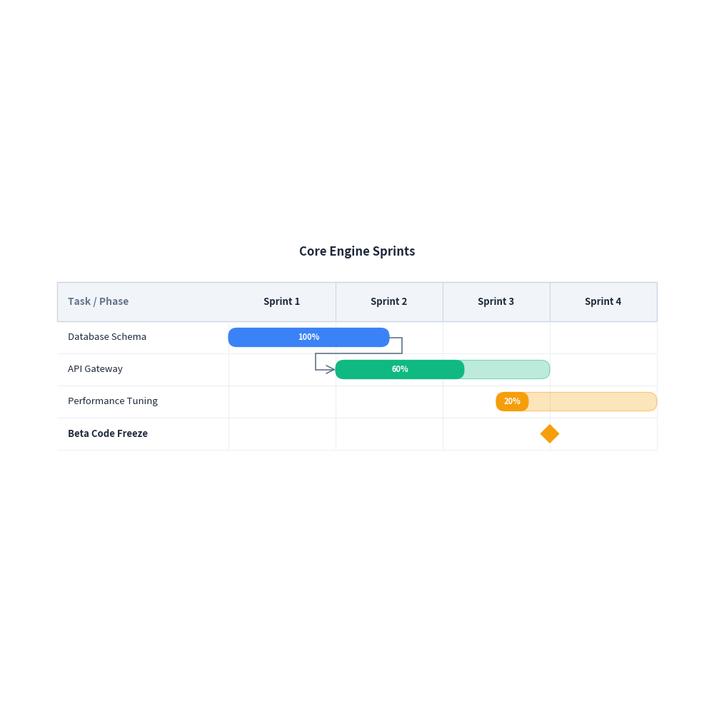

Gantt Chart Guide
drawlib.charts.GanttChart provides declarative, vector-grade Gantt schedule charts for project roadmaps, release planning, and workflow timelines.
Drawing inspiration from sequence diagrams, GanttChart structures timeline columns horizontally along the X-axis while sequentially stacking task rows, section banners, and milestones downwards along the Y-axis.
1. Quick Start: Project Roadmap
Create a multi-phase project schedule with tasks, sections, progress bars, milestones, and dependencies:
from drawlib import canvas
from drawlib.charts import GanttChart
canvas.initialize()
chart = GanttChart(
columns=["Apr", "May", "Jun", "Jul", "Aug"],
width=90.0,
height=55.0,
title="Product Engineering Roadmap (2026)",
header_height=6.0,
)
chart.add_section("Planning & Architecture")
t1 = chart.add_task("Requirements Spec", start="Apr", end=0.75, progress=1.0)
t2 = chart.add_task("System Architecture", start=1.25, end=1.9, progress=0.7)
chart.add_section("Implementation & QA")
t3 = chart.add_task("Frontend UI", start=2.25, end=3.75, progress=0.4)
chart.add_task("Backend Services", start=2.1, end=3.6, progress=0.55)
chart.add_task("Integration & QA", start=3.85, end="Aug", progress=0.0)
chart.add_milestone("Alpha Release", at="Jul")
chart.add_dependency(t1, t2)
chart.add_dependency(t2, t3)
chart.add_marker(at=1.5, label="Current (Mid-May)")
chart.draw(xy=(5.0, 20.0))

2. Sprint Planning & Custom Colors
Specify numerical or sprint offsets, customize bar colors and corner rounding:
from drawlib import canvas
from drawlib.charts import GanttChart
canvas.initialize()
chart = GanttChart(
columns=["Sprint 1", "Sprint 2", "Sprint 3", "Sprint 4"],
width=88.0,
height=42.0,
title="Core Engine Sprints",
bar_radius=1.2,
show_zebra=False,
)
t1 = chart.add_task("Database Schema", start=0.0, end=1.5, progress=1.0, color=(59, 130, 246))
t2 = chart.add_task("API Gateway", start=1.0, end=3.0, progress=0.6, color=(16, 185, 129))
t3 = chart.add_task("Performance Tuning", start=2.5, end=4.0, progress=0.2, color=(245, 158, 11))
chart.add_dependency(t1, t2)
chart.add_milestone("Beta Code Freeze", at=3.0)
chart.draw(xy=(6.0, 25.0))

3. API Reference
GanttChart
| Parameter | Type | Default | Description |
|---|---|---|---|
columns |
list[str] |
Required | Ordered timeline interval labels along the horizontal X-axis. |
width |
float |
90.0 |
Overall bounding box width. |
height |
float | None |
None |
Overall bounding box height. If None, calculated from row count. |
row_height |
float |
4.5 |
Height per task or section row. |
header_height |
float |
5.5 |
Height of the top column header band. |
label_width |
float |
24.0 |
Horizontal width allocated for the left task name column. |
title |
str |
"" |
Chart title displayed at the top. |
title_style |
Style | None |
None |
Style overriding title typography. |
header_style |
Style | None |
None |
Style overriding header background and borders. |
grid_style |
Style | None |
None |
Style overriding vertical timeline gridlines. |
task_style |
Style | None |
None |
Default Style for task bars. |
section_style |
Style | None |
None |
Default Style for section divider rows. |
show_vertical_grid |
bool |
True |
Whether to draw vertical column boundary lines. |
show_zebra |
bool |
True |
Whether to alternate row background colors. |
bar_radius |
float |
0.8 |
Corner radius for task bars. |
Methods
add_task(name: str, start: str | float, end: str | float, progress=0.0, color=None, style=None, show_progress_text=True) -> GanttTask: Add a task bar spanning start to end.add_section(name: str, style=None) -> GanttSection: Add a full-width category section banner.add_milestone(name: str, at: str | float, color=None, style=None) -> GanttMilestone: Add a zero-duration diamond milestone marker.add_marker(at: str | float, label="", color=None, style=None) -> GanttMarker: Add a vertical reference line across all rows (e.g. today).add_dependency(from_task: GanttTask, to_task: GanttTask, color=None, style=None) -> GanttDependency: Draw an orthogonal arrow linking predecessor and successor tasks.get_size() -> tuple[float, float]: Return calculated (width, height) bounding dimensions.draw(xy: tuple[float, float] = (0.0, 0.0)) -> None: Render the Gantt chart onto the canvas.